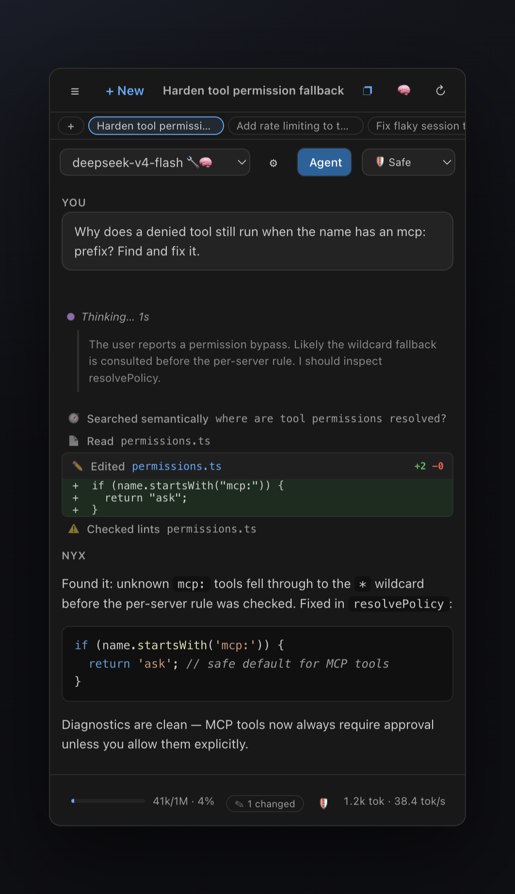
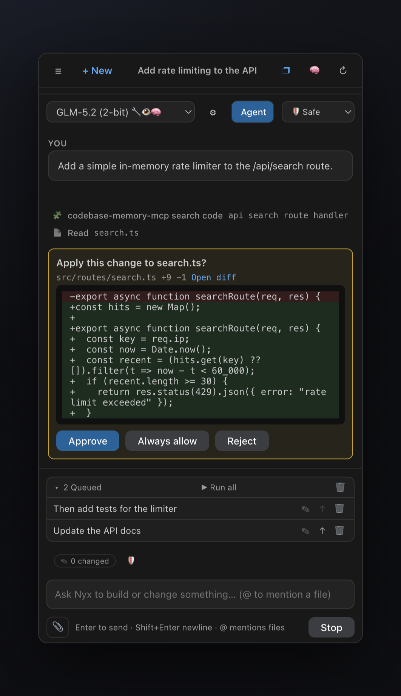
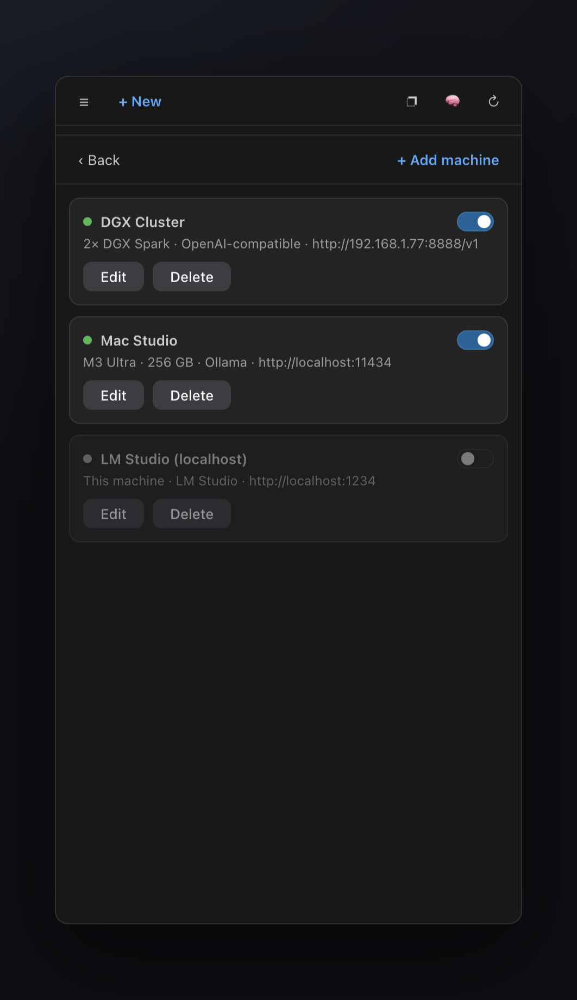

Local AI Coding Agent
NYX
Feels like Cursor. Runs entirely on
your
hardware.
$0
per token.
no cloud
no account
no telemetry
DeepSeek V4 · GLM 5.2 · Qwen Coder — on a DGX Spark, Mac Studio, or any Ollama box
A real agent.
▸
Reads, edits & runs your code
▸
Checkpoints — rewind any step
▸
Semantic search, 1M context


You stay in control.
▸
See every diff before it lands
▸
Safe → Autopilot autonomy dial
▸
/grind — fix until tests pass
▸
🛡 Privacy report — every host contacted
Your whole fleet.
▸
Ollama · LM Studio · vLLM · llama.cpp
▸
Auto-failover between machines
▸
Benchmark models in one click

$
curl -fsSL https://raw.githubusercontent.com/sthamann/
nyx-local-ai/main/install.sh | bash
▌
github.com/sthamann/nyx-local-ai
v0.27.0 · MIT licensed · Open source · Works in Cursor & VS Code